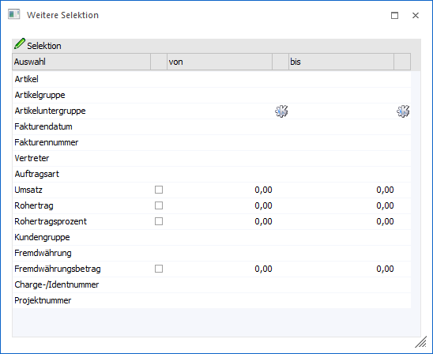

Durch die Anwahl des Buttons "Weitere Selektion" im Programm "Verkaufsstatistik" können weitere Selektionen für die Ausgabe definiert werden.

Folgende Felder stehen für eine Selektion zur Verfügung:
ü Artikel
ü Artikelgruppe
ü Artikeluntergruppe
ü Personenkonto (nur bei ausgewählten Auswertungsmethoden)
ü Fakturendatum
ü Fakturennummer
ü Vertreter
ü Auftragsart
ü Umsatz
ü Rohertrag
ü Rohertragsprozent
ü Kundengruppe
ü Fremdwährung
ü Fremdwährungsbetrag
ü Charge-/Identnummer
ü Projektnummer
Hinweis 1
Die eingegebenen Werte werden nur verwendet, wenn ein Eintrag vorhanden ist. D.h. wenn in dem Feld "Artikel von" keine Hinterlegung vorhanden ist, dann erfolgt keine Einschränkung, ist das Feld hingegen nicht leer, dann wird die Eingabe als Selektionskriterium berücksichtigt.
Hinweis 2
Die numerischen Werte "Umsatz", "Rohertrag", "Rohertragsprozent" und "Fremdwährungsbetrag" werden nur berücksichtigt, wenn die vor den "Wertespalten" vorhandene Checkbox aktiviert wird. Damit ist es auch möglich, für diese Werte eine Abfrage auf "= 0" zu machen.
Bleibt die Checkbox deaktiviert, so werden diese Zeilen bei der Abfrage nicht berücksichtigt.
Buttons
Ø Ok
Durch Anwahl des Buttons "Ok" oder der Taste F5 werden die definierten Selektionen gespeichert und das Fenster geschlossen.
Ø Ende
Mit Hilfe des Buttons "Ende" bzw. der Taste ESC wird das Fenster geschlossen und nicht gespeicherte Eingaben verworfen.
Achtung
Wird das Fenster über diesen Button geschlossen, so wird der Zeitraum in der Verkaufsstatistik gemäß Vorgabe automatisch neu gesetzt!
Ø Initialisieren
Durch Anwahl des Buttons "Initialisieren" bzw. der Taste F4 werden alle getroffenen Selektionen entfernt.